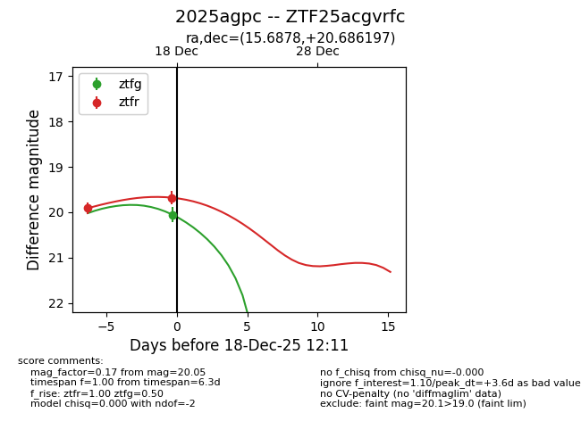
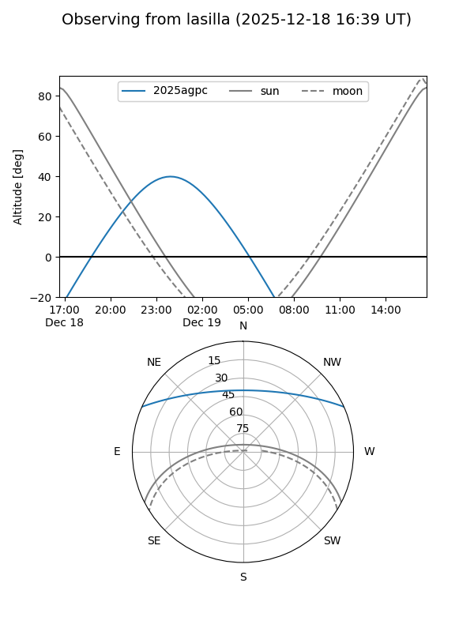
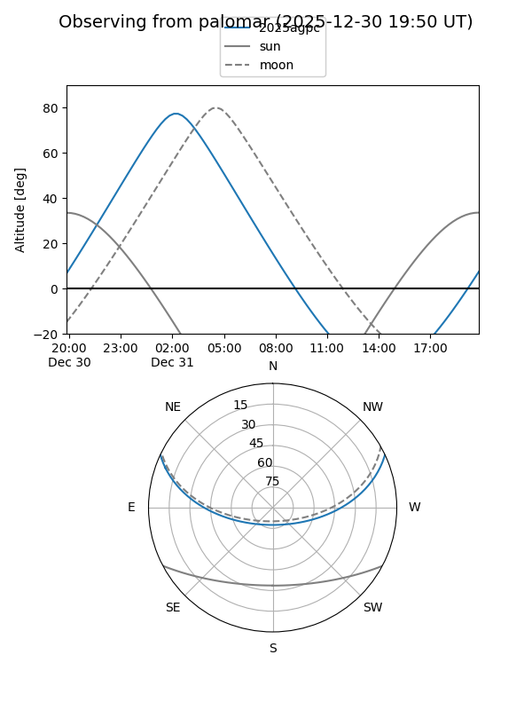
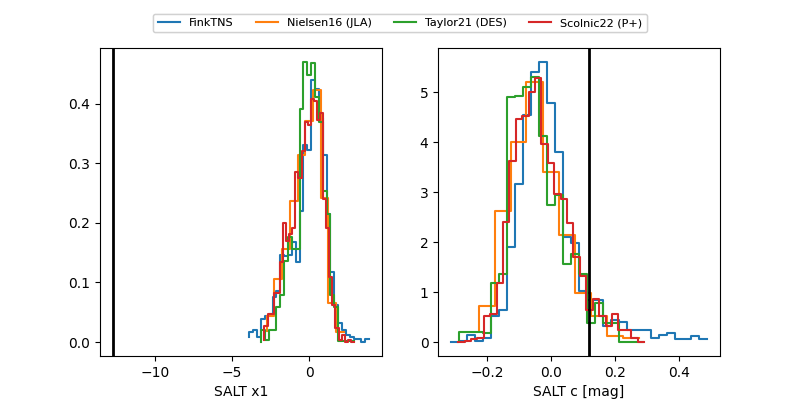

2025agpc
Target 2025agpc at 2025-12-22 15:06
Aliases and brokers:
FINK: fink-portal.org/ZTF25acgvrfc
Lasair: lasair-ztf.lsst.ac.uk/objects/ZTF25acgvrfc
ALeRCE: alerce.online/object/ZTF25acgvrfc
TNS: wis-tns.org/object/2025agpc
YSE: ziggy.ucolick.org/yse/transient_detail/2025agpc
alt names
ZTF25acgvrfc (ztf,fink_ztf)
2025agpc (tns,yse)
Coordinates:
equatorial (ra, dec) = 15.6878,+20.68620
equatorial (HMS+DMS) = 01:02:45.08,+20:41:10.31
galactic (l, b) = (126.4994,-42.10717)
Flags:
Photometry:
last ztfg=20.21, ztfr=19.57
2 ztfg, 4 ztfr detections
Lightcurve

Visibility


Additional plots
